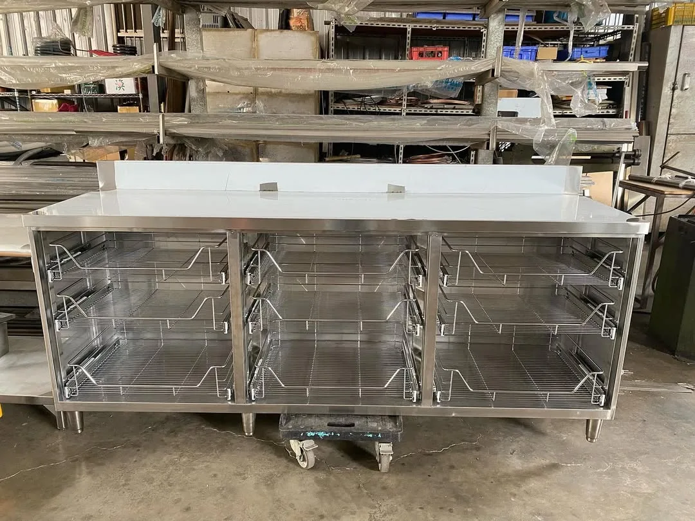

CUSTOM EQUIPMENT
設備客製與配置
從使用需求、設備尺寸到現場配置，協助你找到合適的不鏽鋼製品，讓工作更順手。
討論這項需求02 / OUR SERVICES
從使用需求到製品細節，讓每一個尺寸，都服務你的工作方式。
PLAN / BUILD / USE
客製化不只是改變尺寸。
讓設備適合空間，也適合使用它的人。

FORM FOLLOWS YOUR WORK.CUSTOM EQUIPMENT
從使用需求、設備尺寸到現場配置，協助你找到合適的不鏽鋼製品，讓工作更順手。
討論這項需求STAINLESS STEEL FABRICATION
依空間量身製作工作檯、單槽、雙槽與多功能水槽，讓備料、清洗、收納各就其位。
討論這項需求COLD STORAGE
商用立式與臥式冰箱、冷凍櫃、組合式凍庫，完整考量食材保存與現場工作需求。
討論這項需求COUNTERS & CARTS
為咖啡廳、手搖飲店與行動餐車，製作兼顧美感與效率的吧檯、餐車及工作站。
討論這項需求CUSTOM MADE
保溫檯、儲物架、台車與特殊加工件，從不同產業的需求出發，將想法變成實品。
討論這項需求THE PROCESS / 合作流程
從現場理解，到細節確認。
每個階段，都與你一起。
初步諮詢與現場測繪，了解你的空間、預算與作業方式。
以配置圖討論細節，提供透明詳盡的客製化報價。
從選材、焊接到收邊，由資深師傅把關每一處細節。
專業安裝、定位與設備測試，讓工作空間順暢運作。
共同驗收、設備使用教學與後續維護，持續支持你的日常工作。
BEFORE WE BEGIN / 開始之前
可以。祥鉞從台中出發，提供全台服務。請先告訴我們工程所在地、空間狀況與設備需求，我們會與你討論後續安排。
可以從初步想法開始。若有現場照片、空間尺寸、預計設備或作業方式，提供這些資訊能讓討論更具體。
我們提供保溫檯、儲物架、台車與其他不鏽鋼客製化製品。歡迎提供草圖、照片或使用需求，一起評估製作方式。
LET’S MAKE IT WORK.
從需求討論、客製製作到後續維護，給你可靠的支持。